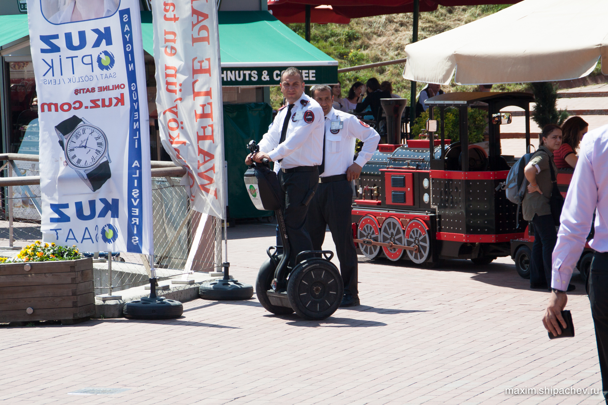
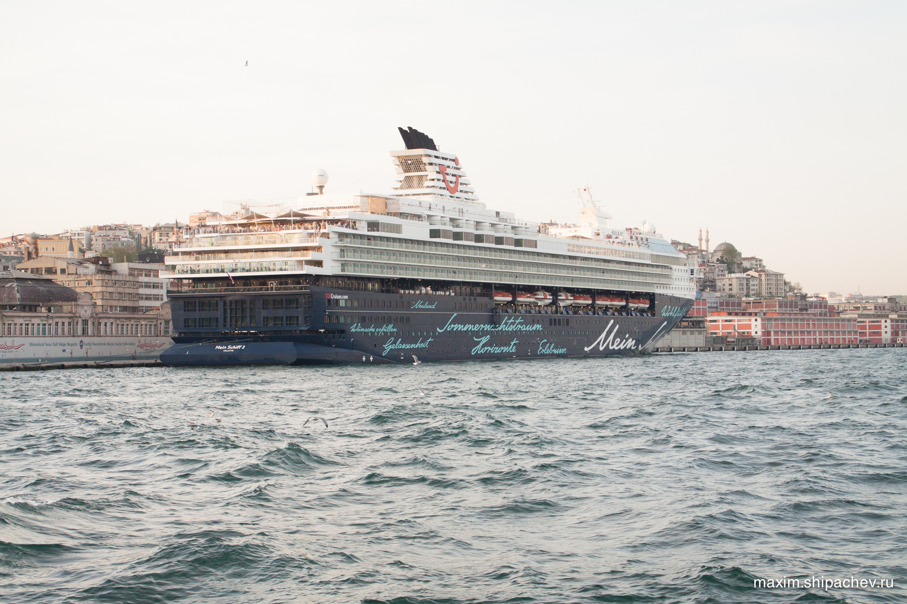

11 день нашего пребывания в Стамбуле, 30 апреля. Проблема с жильём решена окончательно, многие достопримечательности посещены, самые близкие оставляем на последний день, на завтра. Сегодня решаем, для начала, съездить вновь в азиатскую часть города, в стамбульскую Икею, которую видели во время вчерашней поездки в Шиле.
В Стамбуле тепло и солнечно. На каждом углу — широкий ассортимент солнцезащитных очков.
Вчера перед поездкой в Шиле я разорился-таки на Рэйбэн. Обычный Рэйбэн на улице здесь стоит 10 турецких лир (около 170 рублей), Рэйбэн с поляризацией — 25 лир. Ясно же что за 10 — подделка. Покупаю за 25 и выгляжу сегодня вот так.
А наш экипаж становится на привычный курс: трамвай-ноги-паром-автобус. Икеи, как я понял, в Стамбуле две. Мы выбираем ту, что видели и до которой дольше ехать.
Рядом с Икеей размещён большой торговый центр со смешным названием Буяка (Buyaka). Немножко плутаем по привычке и наконец попадаем в местный филиал потребительского рая.
Начинаем с Реала, местной «Палаты».

Кажется, уже писал, но цены на электронику оказались в Турции порой даже выше кемеровских.
А вот со сладостями дела обстоят лучше, да и ассортимент интересней. Как обычно, хочется купить всё (
Indirim, кстати, значит Распродажа.
Про чай тоже уже писал. В Турции его любят. Много любят.
К сожалению для турков, в Турции, как и России, нет Apple Store. Электроника «с яблоком» стоит так же некисло, как в России и даже внешний вид продавцов заставил вспомнить меня местный Re:Store.
Пришли в Буяку. Множество бутиков, хочется что-то купить. Купил куртку.
Будний день народу немного. Дочь грабит приглянувшийся магазин. Из добычи — шарик. Родители проводят воспитательную беседу.
Перемещаемся в Икею. Из необычного — в туалете — детский унитаз для детей.
Покидаем Икею, не купив в этот раз ни кресла, ни стола.
Катаю дочку на паравозике, пьём чай с пончиками.

Продолжаем шоппинг. В Вайкики случилась забавная история: мы гуляли по торговому центру уже пару часов, а в Вайкики, при моём приближении к воротам на выходе, те начинали пищать. Ну а все такие на меня. Так как ничего такого я в Вайкики не брал, то подошёл к ближайшему продавцу и сказал, что «My backpack is bibip», начали его разбирать, оказывается в куртке остался датчик. Отклеили.
Проведя целый день в автобусе и торговом центре, возвращаемся в гостиницу.
